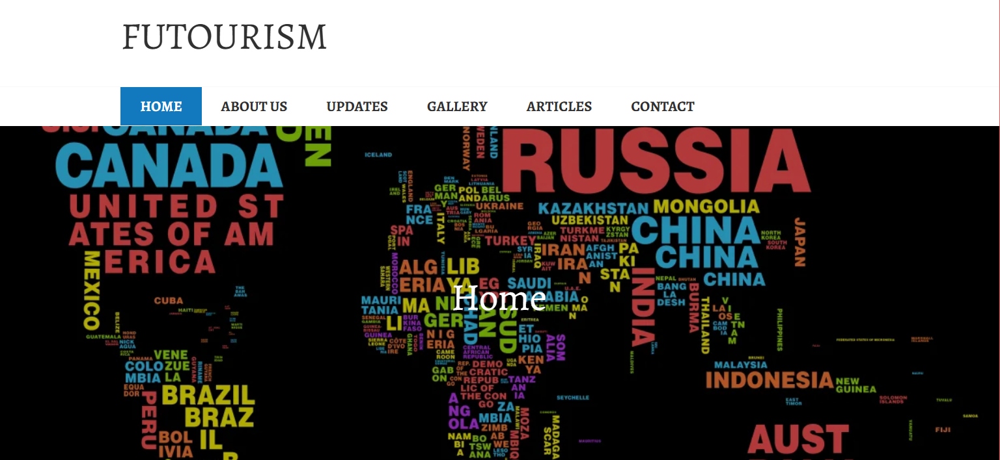
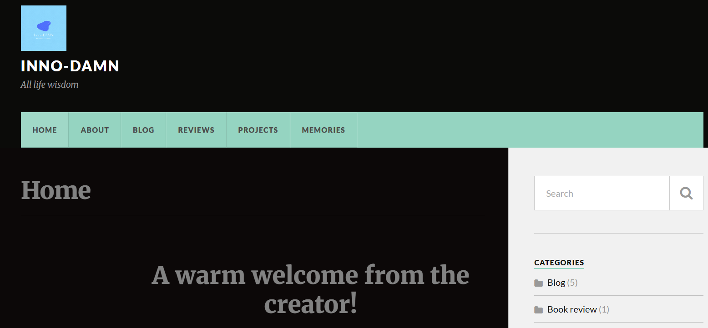

My journey with website development began during my university years, where I had many projects that required creating demos.
I continued to apply these practices throughout my corporate jobs, learning about user experience, trends, and consumer patterns.
Now, I'm confident in helping businesses enhance their online presence and generate genuine leads.
This page showcases some of my projects from university to the present day. Please note that some of these websites were not fully conceptualised.
University projects
My first ever website was created for launching a tourism company. This was an opportunity to showcase who we are and how we want to develop our business further, including our future plans.

Please feel free to explore this website by clicking here.
During my minor at Rotterdam Business School, I had to build a website with some content. Later, I used this website to write blogs and showcase my proudest project — Wine Therapy.
I used this website as a portfolio, but I wasn't inspired to continue further. I left this website as it is. Now, Talu.Studio is born.

For this website, I designed a moving logo using my favourite colours. The name came from the idea of writing news regarding innovation, smart tourism, and more.

PortXL website project
During my time at PortXL, I focused heavily on improving the website. I worked on this project for several months, starting with documentation and providing explanations to my team. I then analysed the competitors and ultimately generated ideas to align with business goals.
Here is the final presentation I showed to higher-ups. You can download it using the button below.
Download presentation
Please keep in mind that the current PortXL website looks different.
If you're curious to learn about the actual process behind it, please use the contact form on the home page.

.jpg)